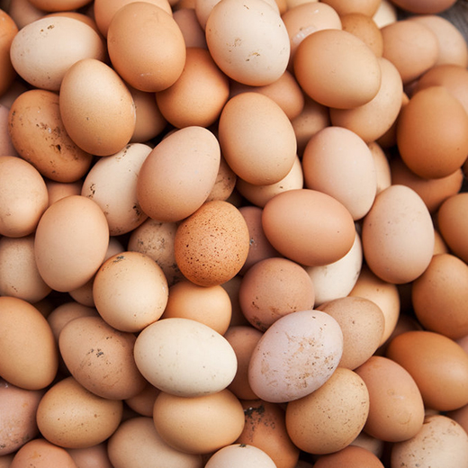
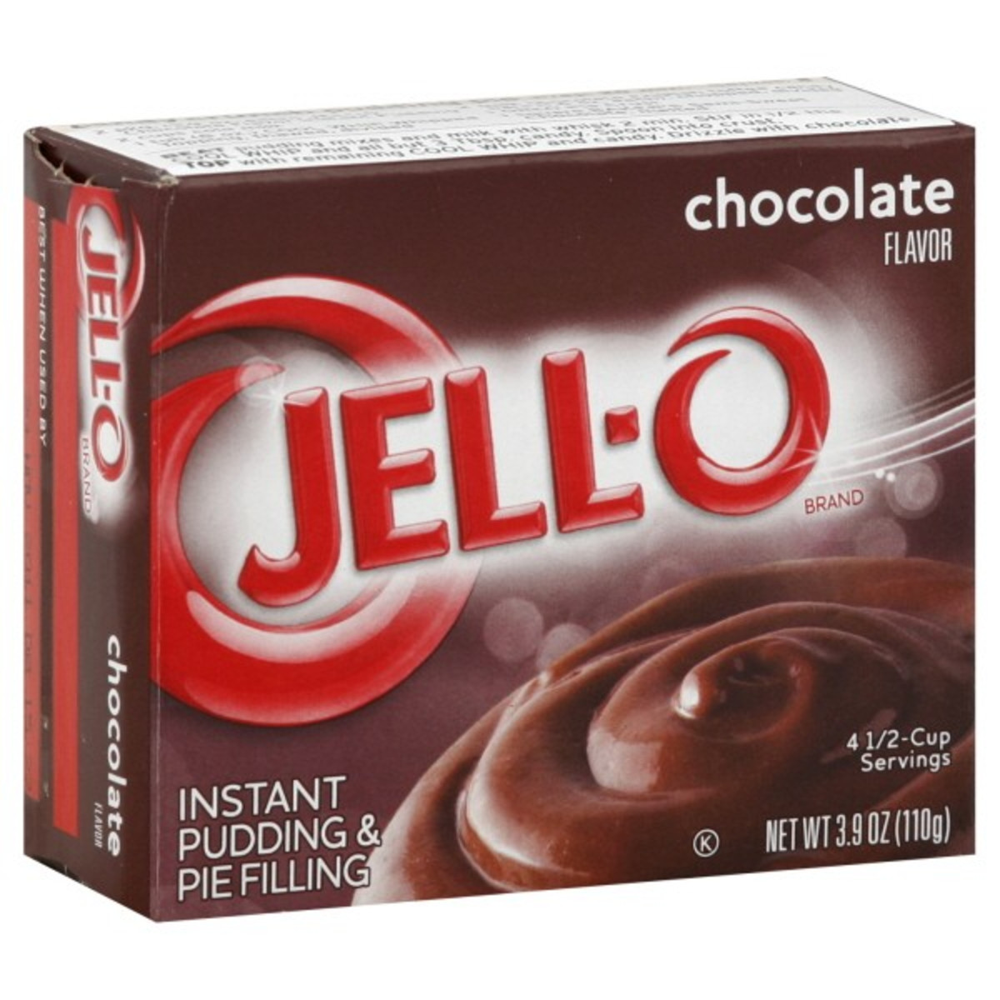
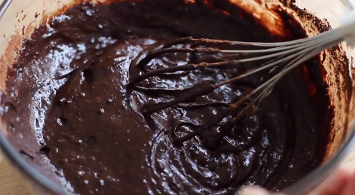
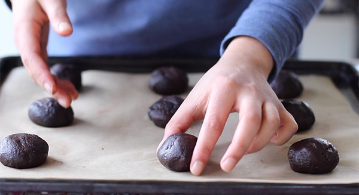
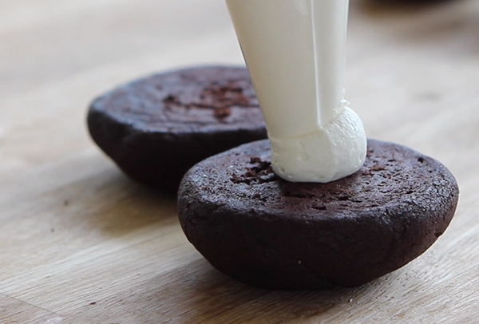

How to Make Woopie Pies
Ingredients
- 1 box Betty Crocker™ SuperMoist™ Devil's Food cake mix
- 3/4 cup water
- 1/2 cup vegetable oil
- 3 eggs
- 1 box (4-serving size) chocolate instant pudding and pie filling mix
- 2 containers Betty Crocker™ Whipped Fluffy White Frosting


Steps



- Heat oven to 350°F.
- Line cookie sheets with parchment paper, silicone baking liners, or lightly spray with cooking spray.
- In large bowl, beat all cookie ingredients with electric mixer on low speed until moistened; beat 1 minute longer on high speed.
- Pour batter into a 1 gallon resealable plastic bag. Seal baggie and cut small hole off of one of the bottom corners.
- Pipe batter into 36 small circles onto cookie sheets about 1-inch apart to allow for spreading.
- Bake 10 to 12 minutes until set being careful to not over bake. Cool 2 minutes; remove from cookie sheets and place on cooling rack. Cool completely before filling.
- Once cookies are cooled spread frosting on flat side of one cookie. Top with the second cookie, flat side down to make a sandwich.